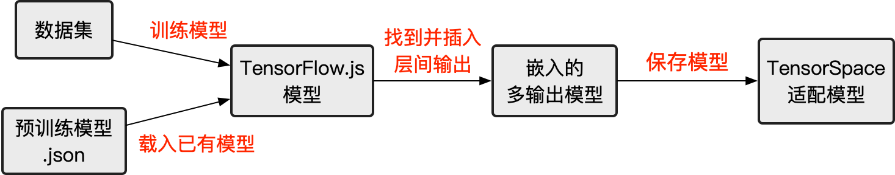
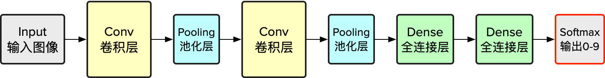
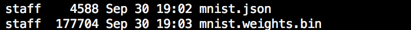
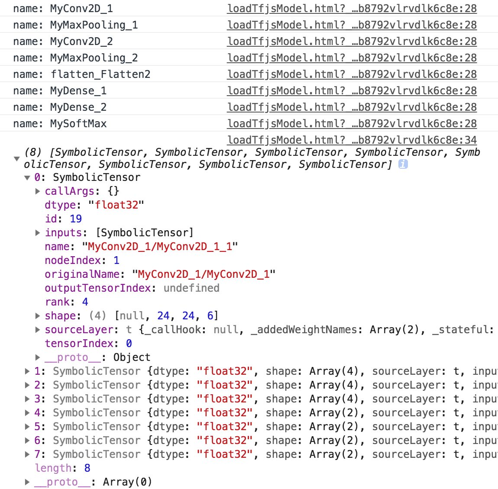

本篇将介绍如何预处理基于 TensorFlow.js （以下简写为 “tfjs” ）构建的网络模型以适配 TensorSpace。
如果您是第一次使用 tfjs 的新手，建议先阅读由 TensorFlow.js 官方提供的网络训练教程。
以下为本篇教程所使用的代码及模型文件：
filter_center_focus
createTfjsModel.html
filter_center_focus
loadTfjsModel.html
filter_center_focus
模型
请确保正确安装并引入 tfjs。
安装 tfjs：
npm install @tensorflow/tfjs通过以下脚本在 html 中引入 tfjs：
<script src="libs/tf.min.js"></script>预处理 tfjs 模型，有以下几个步骤：

图1 - 预处理 tfjs 模型的步骤
本教程中，我们将分两种主要情况来介绍预处理的过程：
filter_center_focus
1. 训练一个 TensorSpace 适配的模型l
filter_center_focus
2. 转换一个 tfjs 模型以适配 TensorSpace
以下均使用 MNIST 数据集以及 LeNet 网络结构为例。
1 训练 TensorSpace 适配的模型
1.1 训练新模型
若果您并没有任何可以直接使用的 tfjs 模型，可以按照本小节的方法构筑一个新的样例模型。
首先，让我们了解以下 LeNet 的网络结构：

Fig. 2 - LeNet structure
根据以上结构，搭建一个基本的网络。
// Initialize layer.
const input = tf.input({shape: [28, 28, 1]});
const conv1 = tf.layers.conv2d({
kernelSize: 5,
filters: 6,
strides: 1,
activation: 'relu',
kernelInitializer: 'VarianceScaling',
name: 'MyConv2D_1'
});
const maxPool1 = tf.layers.maxPooling2d({
poolSize: [2, 2],
strides: [2, 2],
name: 'MyMaxPooling_1'
});
const conv2 = tf.layers.conv2d({
kernelSize: 5,
filters: 16,
strides: 1,
activation: 'relu',
kernelInitializer: 'VarianceScaling',
name: 'MyConv2D_2'
});
const maxPool2 = tf.layers.maxPooling2d({
poolSize: [2, 2],
strides: [2, 2],
name: 'MyMaxPooling_2'
});
const flatten = tf.layers.flatten();
const dense1 = tf.layers.dense({
units: 120,
kernelInitializer: 'VarianceScaling',
activation: 'relu',
name: 'MyDense_1'
});
const dense2 = tf.layers.dense({
units: 84,
kernelInitializer: 'VarianceScaling',
activation: 'relu',
name: 'MyDense_2'
});
const softmaxLayer = tf.layers.dense({
units: 10,
kernelInitializer: 'VarianceScaling',
activation: 'softmax',
name: 'MySoftMax'
});
// Make layer connection.
const conv1Output = conv1.apply(input);
const maxPool1Output = maxPool1.apply(conv1Output);
const conv2Output = conv2.apply(maxPool1Output);
const maxPool2Output = maxPool2.apply(conv2Output);
const flattenOutput = flatten.apply(maxPool2Output);
const dense1Output = dense1.apply(flattenOutput);
const dense2Output = dense2.apply(dense1Output);
const softMaxOutput = softmaxLayer.apply(dense2Output);
// For multiple outputs purpose, we use function tf.model API to build the model.
const model = tf.model({
inputs: input,
outputs: softMaxOutput
});wb_sunny注意：
- filter_center_focus 由于 tfjs 的限制，需要使用 tf.model() 和 layer.apply() 的组合来构建网络。所有的输出对象将在之后保存到嵌入后模型中。
- filter_center_focus 如果您需要使用 tf.sequential() 来构建网络，那么您需要参见 2. 转换一个 tfjs 模型以适配 TensorSpace.
在构建网络结构之后，载入 MNIST 数据集进行编译和训练： （注：训练用脚本来源自 tfjs 官方教程）
const LEARNING_RATE = 0.0001;
const optimizer = tf.train.adam(LEARNING_RATE);
model.compile({
optimizer: optimizer,
loss: 'categoricalCrossentropy',
metrics: ['accuracy'],
});
let data;
async function load() {
data = new MnistData();
await data.load();
}
async function train() {
const BATCH_SIZE = 50;
const TRAIN_BATCHES = 2;
const TEST_BATCH_SIZE = 1000;
const TEST_ITERATION_FREQUENCY = 100;
for (let i = 0; i < TRAIN_BATCHES; i++) {
const batch = data.nextTrainBatch(BATCH_SIZE);
let testBatch;
let validationData;
if (i % TEST_ITERATION_FREQUENCY === 0) {
testBatch = data.nextTestBatch(TEST_BATCH_SIZE);
validationData = [
testBatch.xs.reshape(
[TEST_BATCH_SIZE, 28, 28, 1]
),
testBatch.labels
];
}
const history = await model.fit(
batch.xs.reshape([BATCH_SIZE, 28, 28, 1]),
batch.labels,
{
batchSize: BATCH_SIZE,
validationData,
epochs: 1
});
if (i % TEST_ITERATION_FREQUENCY === 0) {
const loss = history.history.loss[0];
const accuracy = history.history.acc[0];
console.log(accuracy);
}
}
}
await load();
await train();1.2 收集中间层数据
在构建时由于采用了将前一层输出用作下一层输入的方法，我们只要将所需要的中间层包裹并植入一个新的模型之中即可。
const encModel = tf.model({
inputs: input,
outputs: [conv1Output, maxPool1Output, conv2Output,
maxPool2Output, dense1Output, dense2Output, softMaxOutput]
});wb_sunny注意：
- filter_center_focus
实际上创建了两个模型：
- flare model 是我们按照常规机器学习流程创建的模型。
- flare encModel 是我们添加了中间层输出的嵌入多输出模型，稍后进行保存。
1.3 保存嵌入后模型
以下代码用于保存嵌入的多输出模型。〔源码〕createTfjsModel.html
async function saveModel() {
await encModel.save("downloads://YOUR_MODEL_NAME");
}wb_sunny注意：
- filter_center_focus downloads:// 表示通过浏览器下载将模型保存到本地。
- filter_center_focus
我们将会得到2种不同类型的文件：
- flare .json 包含神经网络结构。
- flare .bin 包含所训练得到的权重。
- filter_center_focus 关于保存 tfjs 模型，参考 tf.Model.save。
- filter_center_focus 关于其他保存模型的方式，参考 官方保存教程
在保存文件之后，可以得到：

图3 - 转换后所保存的最终模型文件
2 转换 tfjs 模型以适配 TensorSpace
2.1 载入现有模型
通过以下代码加载 tfjs 模型。
〔源码〕 loadTfjsModel.html
const loadedModel = await tf.loadModel('/PATH_TO_MODEL_JSON/model.json');2.2 收集中间层数据
通过以下方式收集中间层数据。〔源码〕 loadTfjsModel.html
// Hard code the input if you are sure about the shape
// const input = tf.input({shape: [28, 28, 1]});
const input = ((typeof loadedModel === 'undefined') ? layers[0].input : loadedModel.input);
let targetLayerNameList = ["MyConv2D_1","MyMaxPooling_1","MyConv2D_2","MyMaxPooling_2","MySoftMax"];
let outputList = [];
let tempInput = input;
let tempOutput = null;
for (i =0; i < layers.length; i++) {
console.log("name: " + layers[i].name);
tempOutput = layers[i].apply(tempInput);
if (targetLayerNameList.indexOf(layers[i].name) >-1) {
outputList.push(tempOutput);
}
tempInput = tempOutput;
}
console.log(outputList);浏览器控制台有以下输出：

图4 - 多中间层名称及输出
wb_sunny注意：
- filter_center_focus 由于 tfjs 的局限性，需要为中间层逐一添加所对应的输入。
- filter_center_focus 在例子中，由于模型结构比较简单。只需要逐一遍历每一层对象，将其作为下一层的输入提供给下一层的对象。但当我们在遇到比较复杂的模型结构时，请根据实际情况调整合适的输入输出方法。
之后，将提取到的层对象添加到一个新的模型即可。
〔源码〕 loadTfjsModel.html
const encModel = tf.model({
inputs: input,
outputs: outputList
});
singleOutput = encModel.predict(tf.randomNormal([1,28,28,1]));
console.log(singleOutput);
图5 - 嵌入后模型的中间层输出
2.3 保存嵌入的多输出模型
完成上述步骤之后，使用下面代码保存多输出模型。
〔源码〕 loadTfjsModel.html
async function saveModel() {
await encModel.save("downloads://encModel");
}
saveModel();
若至此一切顺利，可移步下一部分——
加载TensorSpace适配模型